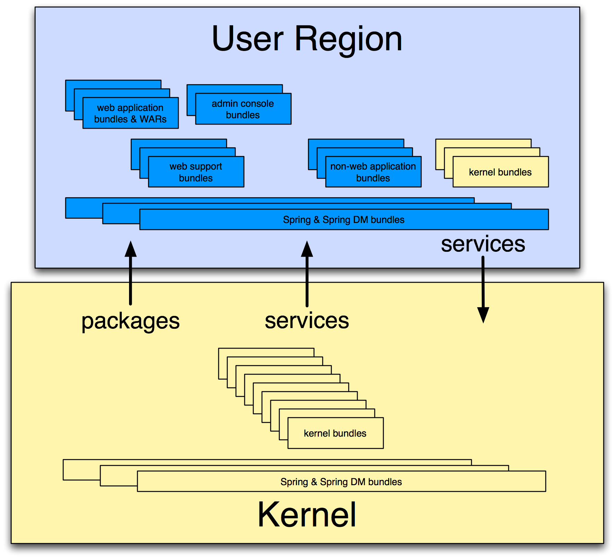

Conceptually, VWS can be divided into two separate subsystems, one of which actually encompases the other:
See The Virgo Kernel for additional information.
See The User Region for additional information.
When you download and install Virgo Web Server you get both the kernel and web server support (configured in the user region). You can also download and use the kernel on its own if you do not plan on deploying Web applications.
The following graphic shows how the kernel and user region make up VWS:
|  |
The Virgo Kernel encapsulates almost all of VWS except for the deployment of Web applications. In sum, the kernel provides the following VWS features:
Deployment of non-Web artifacts, such as OSGi bundles, PARs, plans, and configuration artifacts.
Local and hosted repositories
Scoping
Hot deployment
User region
Auto-provisioning
System and application tracing and dump support
Spring beans and Spring DM support
See Configuring VWS for details about configuring the kernel to better suit your environment.